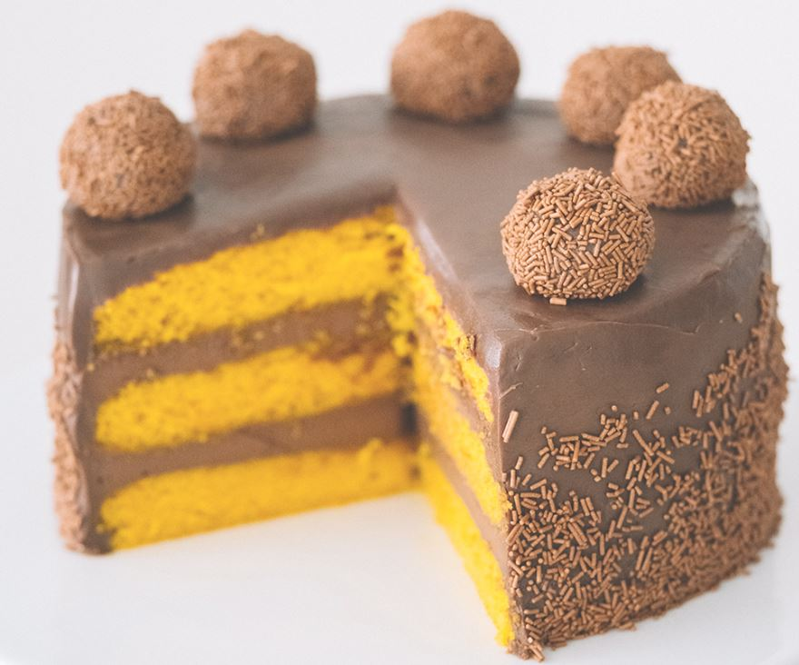
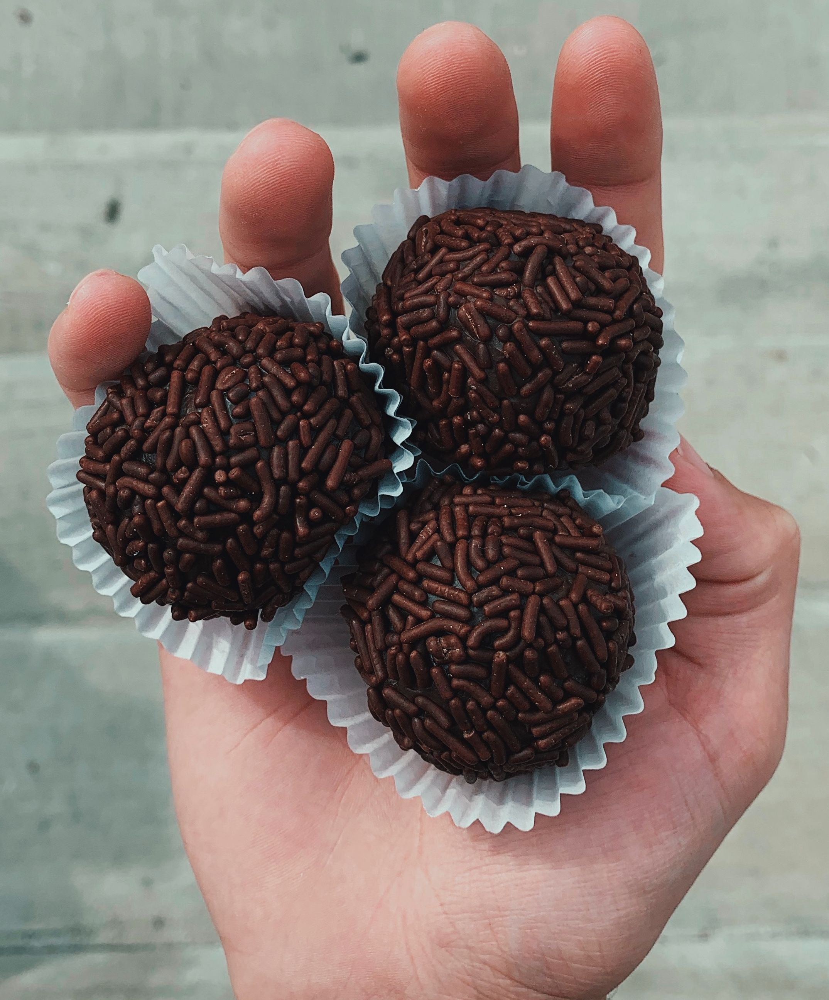

One of the most popular Brazilian appetizers, cheese bread is a delicious snack made with tapioca flour, milk, oil and eggs.
You have probably tried cheese bread before at a Brazilian steakhouse. Now you have the chance to make it yourself! Great for snacks and perfect to cook with the children.
To make cheese bread you will need:
3 Eggs
1 cup of milk
1 cup of vegetable oil
1 lb. of Tapioca Flour
250g of Parmesan Cheese
Salt to Taste
Preheat oven to 375F.
Pour the flour in a bowl. Boil the milk and oil, then pour in tapioca flour. Let it cool. Once it is enough cool, add the eggs, salt and parmesan cheese and mix by hand until well combined. Roll the dough into little balls and drop onto an ungreased baking sheet.
Bake for about 20 minutes until tops are lightly browned.
Carrot Cake

If you ask a Brazilian what their favorite cake is, most likely they will tell you its carrot cake!
Made mainly from carrots, flour and eggs, a Brazilian carrot cake brings wonderful childhood memories. Perfect for an afternoon snack.
To make carrot cake you will need:
3 Eggs
Half cup of vegetable oil
2 cups of sugar
1 lb. of peeled carrots
2 cups of flour
1 tablespoon of baking powder
4 tablespoons of chocolate powder
1 cup of milk
Chocolate sprinkles to decorate
Preheat oven to 350F. Lightly grease 9x13 baking dish.
In a blender, add carrots, eggs and oil and blend until smooth and carrots are finely chopped. Pour in a bowl, then add sugar and flour and mix well. Last, add the baking powder and mix with a spoon.
Pour in baking dish and bake for about 40 minutes.
Make the icing by combining milk and chocolate powder over medium-heat, stirring until mixture is thick. Spread evenly over cake. Add chocolate sprinkles. Enjoy it!
Brigadeiro

Now this one is by far the favorite sweet treat of any Brazilian: the delicious Brigadeiro!!
Simply made with chocolate and condensed milk, brigadeiro is a main tradition within any and every Brazilian family.
To make Brigadeiro you will need:
1 can of Condensed Milk
4 tablespoons of chocolate powder
Chocolate sprinkles to decorate
Mix condensed milk and chocolate powder in a small cooking pot over medium-high heat, stirring well until it begins to boil and mixture thickens.
Let it cool. Grease hands with butter, then make small balls with the mixture. Rolls over chocolate sprinkles. Its ready to eat!
Feijoada - Brazilian Black Beans
Brazilians love rice and beans, but feijoada is not just regular black beans. It is a mixture of flavors that makes the black beans so yummy!
For lunch or dinner, this Brazilian side will add flavor along with great nutritional value.
To make Brazilian Black Beans you will need:
1 lb. of dried black beans
Garlic
Onion Powder
2 tbsp. of cilantro
2 tbsp. of parsley
Bacon
Beef for Stew
Olive oil
3 tbsp. of Knorr Granulated Beef Bouillon
Salt and Pepper
Put dried beans in a bowl with water and let it soak for at least 30 minutes.
In a digital pressure cooker, turn on Saute Mode and sautee beef for stew and bacon. Add garlic, onion powder, salt and pepper and stir, until meat is browned. Add beans, parsley, cilantro, Knorr and water enough to cover all ingredients.
Close and seal pressure cooker and set the Manual setting to 55 minutes. Once done, release pressure, stir and serve over rice.
 Brazilians love rice and beans, but feijoada is not just regular black beans. It is a mixture of flavors that makes the black beans so yummy!
Brazilians love rice and beans, but feijoada is not just regular black beans. It is a mixture of flavors that makes the black beans so yummy!